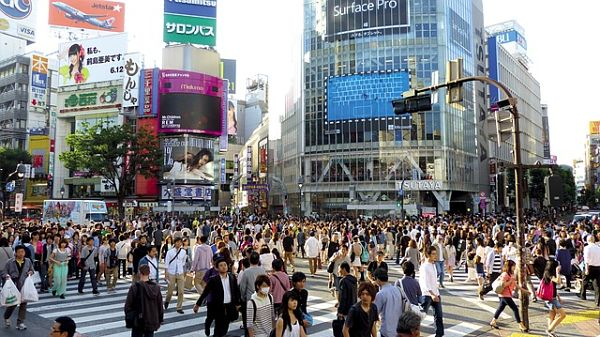
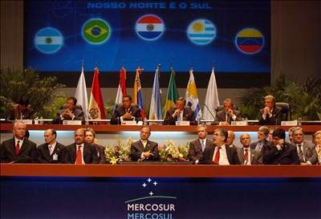
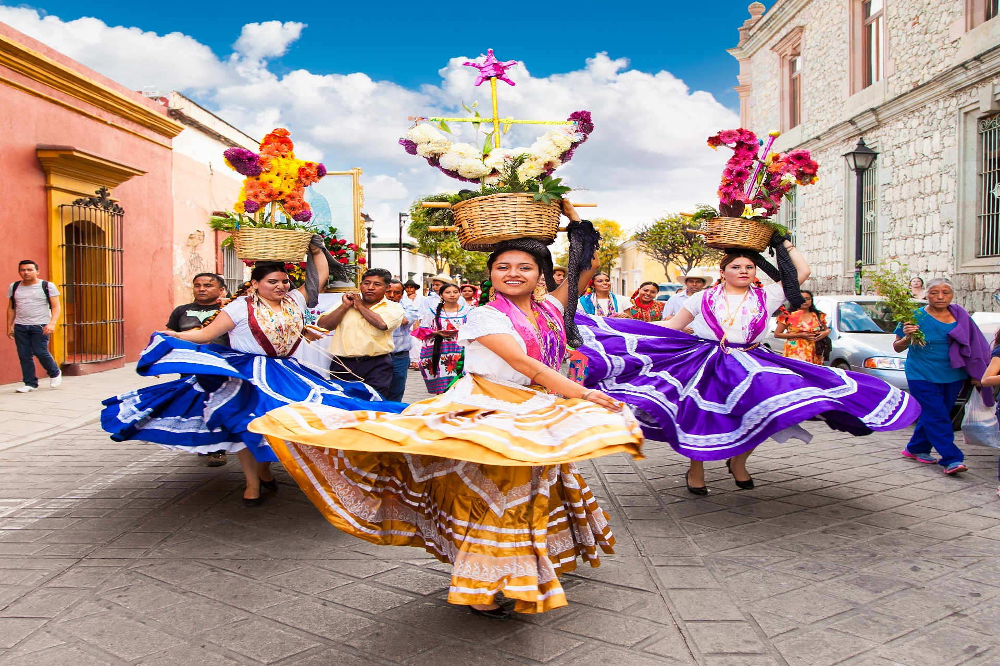

BIOLOGIA CIENCIAS Y TECNOLOGIA
Los seres vivos están formados por células
El cuerpo de todos los seres vivos está compuesto por células. La célula es la parte más pequeña de
la
que están formados los seres vivos y es capaz de actuar de manera autónoma, es decir, realizan las
funciones de nutrición, relación y reproducción.
Algunos seres vivos se componen de una sola célula (unicelulares), pero la mayoría tienen muchas más
células (pluricelulares): por ejemplo, en nuestro cuerpo, hay al menos unos diez billones de
células.
Existen una gran diversidad de seres vivos, todos están formados por células que tienen diferentes formas, tamaños y funciones, como es el caso de los humanos.
A continuación se muestra un vídeo para explicar mejor el tema abordado
Clasificación de las células
La célula es la unidad fundamental de los seres vivos que contiene todo el material necesario para
mantener los procesos vitales como crecimiento, nutrición y reproducción. Se encuentra en variedad
de formas, tamaños y funciones.
Las células se clasifican en células procariotas y eucariotas. Las células procariotas se
caracterizan por no tener un núcleo definido en su interior, mientras que las células
eucariotas poseen su contenido nuclear dentro de una membrana.

Los procariontes tienen su material genético disperso en el citoplasma. Los eucariontes poseen
núcleo, donde se encuentra el material genético de la célula.
Existen organismos como las bacterias y los protozoarios constituidos por una célula (organismos
unicelulares). Los organismos multicelulares o pluricelulares más complejos se encuentran
constituidos por una mayor cantidad y diversidad de células.
Se cree que todas las células evolucionaron de un progenitor común, ya que todas poseen estructuras
y moléculas similares.
Estructura de las células
En las células en general se pueden distinguir distintas estructuras con el microscopio óptico: núcleo, membrana citoplasmática y citoplasma.
FORMACION CIVICA Y ETICA
CAMBIOS EN LA ADOLECENCIA
Reconocimiento, aceptación y valoración de sí mismo
La aceptación y la valoración son ladrillos básicos dentro de la construcción de una buena autoestima. El niño que se siente aceptado como es, es un niño que aprende a asumir sus errores y, posteriormente, a convertirlos en mejorías.
Los padres deben tener una idea realista y clara de cómo es su hijo y quererle por todo, lo bueno y lo malo, que es. Y no dejar de asumir delante de todos, y principalmente dentro de ellos mismos, esta postura.
La autoestima y el cuerpo se ligan a menudo. Si entendemos la autoestima como la suma de la confianza y el respeto, ambas integradas, que una persona siente a hacia sí mismo, es fácil comprender que la autoestima y el cuerpo tengan una relación significativa. Sobre todo, si se tiene en cuenta que la primera apreciación que todo sujeto tiene sobre sí mismo proviene de la realidad ínter subjetiva, de su ingreso a lo social a través del contacto con el cuerpo de los otros significantes que ven, esperan, y reclaman de ese sujeto.
A lo largo del crecimiento estos rasgos tomados de los otros significantes son ratificados y asimilados como la propia valoración del sujeto sobre sí mismo. Y en esta valoración de la autoestima y el cuerpo influyen luego, en la adolescencia, la posibilidad de inscribir y conceptualizar la experiencia única de cada sujeto con el medio a través de la interacción, transformando lo heredado en original y posibilitando el cambio. Rompiendo el determinismo.
Por todo esto es fundamental supervisar la constitución de la relación entre la autoestima y el cuerpo en los adolescentes. Es necesario que los adultos permitan y promueva una alta valoración del propio cuerpo en los adolescentes. Que se trabaje sobre los verdaderos orígenes de los conceptos de belleza en la época actual y sobre la importancia y la necesidad del respeto y la aceptación de la no masificación de los estándares corporales que se asocian a posibilidades de éxito y triunfo.
Es importante que se remarque en el adolescente la resistencia a los pensamientos negativos sobre el propio cuerpo. Mostrar el camino hacia las opciones y no pasar por alto sus logros. Evitar la comparación siempre será positivo en la adolescencia, periodo en que su concepto de sí mismo se encuentra en proceso de formación y de alta vulnerabilidad a las opiniones de los mayores importantes para él.
A continuación se muestra un vídeo acerca del autoestima
GEOGRAFÍA
EL ESPACIO GEOGRÁFICO
En geografía, se entiende por espacio geográfico al modo específico en que una sociedad se organiza en el espacio físico que ocupa; o bien al espacio físico mismo, una vez que ha sido organizado por una sociedad específica.
Dicho en términos más sencillos, este concepto se refiere al modo en que las sociedades se interrelacionan con su medio ambiente, estructurado en diversos “paisajes”: natural, humanizado, agrario, industrial, urbano, etcétera. Puede emplearse como sinónimo de territorio.
De esta manera, a la hora de estudiar el espacio geográfico de una sociedad, deberemos hacer referencia a su organización económica, política, social y cultural; elementos que en geografía se representan usualmente como un conjunto de nodos, líneas, áreas o flujos, según lo que estipula el análisis espacial.
Por ende, algunas dinámicas son estáticas y estables (como el uso del suelo), mientras que otras móviles y fluidas (como el transporte)
Este concepto es empleado en las distintas escuelas de la geografía, aunque más ampliamente en la geografía humana. Su lógica suele ser la de partir de lo visible, para evidenciar los procesos que le dieron origen y las dinámicas que, presentes o ausentes, construyeron el paisaje que se observa.
Componentes del espacio geográfico
Al espacio geográfico se le atribuyen los siguientes componentes:
-
Naturales. Aquellos que, obviamente, no dependen de la intromisión de los seres humanos, sino que responden a la naturaleza. montañas, valles, lagos, mares, son ejemplos de ello.
-
Sociales. Aquellos que provienen, en cambio, de actividades humanas que atañen a las dinámicas de creación de una comunidad, como son las actividades religiosas, las nacionalidades, los Estados mismos, etc.

-
Políticos. Aquellos que derivan del modo en que el poder se organiza en la sociedad humana, es decir, que responden a pactos, acuerdos o imposiciones históricas, como pueden ser la delimitación de las naciones del planeta, la organización sociopolítica de sus territorios, etc.

-
Económicos. Aquellos que son fruto de las numerosas dinámicas de producción y consumo que la humanidad lleva a cabo para satisfacer sus propias necesidades, como pueden ser los flujos de capitales, las clases sociales, etc.
-
Culturales. Aquellas que provienen del modo particular de ver el mundo que una comunidad humana preserva a lo largo de las generaciones, como son las tradiciones locales, el idioma, la gastronomía, etc.

Vídeo acerca del tema anterior
HISTORIA
Independencia de las trece colonias inglesas del Norte de América
Las Trece Colonias, que se formaron de norte a sur, fueron: Massachusetts, Nuevo Hampshire, Rhode Island, Connecticut, Nueva York, Pensilvania, Nueva Jersey, Delaware, Maryland, Virginia, Carolina del Norte, Carolina del Sur y Georgia.
El proceso revolucionario que se gestó en América del Norte (en el litoral del Océano Atlántico) hacia la segunda mitad del siglo XVIII fue encabezado por los habitantes de las 13 colonias inglesas, como respuesta a las medidas políticas y económicas que impuso Jorge III, rey de Inglaterra. Tras diversas acciones de rechazo- no del todo atendidas- a las mismas, por el gobierno inglés, los colonos –dirigidos por personajes como Thomas Jefferson, George Washington, Benjamín Franklin, y otros- decidieron declarar su independencia el 4 de julio de 1776 y constituir el primer país libre del continente americano: Estados Unidos de América.
Las causas de dicha guerra se pueden entender a partir de los siguientes aspectos:
- Las medidas que impuso a los colonos el gobierno inglés al concluir la Guerra de Siete Años con Francia.
- La consolidación política, social y económica que los colonos lograron por las libertades que la Corona les había otorgado inicialmente, mismas que ya han sido esbozadas en líneas anteriores.
- La influencia de las ideas de la Ilustración, a las cuales recurrieron los colonos para oponerse a las nuevas disposiciones y justificar la lucha contra la Corona inglesa. Recuerda que dichas ideas ya fueron referidas en la visión de conjunto de esta unidad de estudio.
Esta guerra en América fue una extensión de la que se dio en Europa, como resultado de la rivalidad económica entre ambas naciones y los conflictos por la definición de los límites de sus posesiones coloniales al norte del continente americano. Con el apoyo de los colonos, las tropas británicas vencieron a las francesas, y por esa razón, Francia tuvo que ceder a Inglaterra la región de Canadá y a España la región de la Luisiana. Inglaterra no sólo obtuvo una porción de territorio cuyo control deseaba ejercer aún en contra de las ambiciones e intereses de los colonos, también heredó un déficit financiero que quiso sanear mediante la imposición de medidas políticas y económicas que afectaban a aquéllos.
Mapas que muestran el territorio de Norteamérica antes y después de los Tratados de París 1763. Según los términos del Tratado de París, Francia perdió todas sus posesiones en los territorios de Norteamérica. Toda la región al este del Mississippi y todas las posesiones francesas en lo que hoy es Canadá pasaron a manos de Gran Bretaña. España, aliada de Francia durante la contienda, entregó parte de la Florida, pero se le confirmó el dominio de los territorios al oeste del Mississippi.
LENGUA MATERNA ESPAÑOL
Escribe el nuevo reglamento escolar
Características de un reglamento escolar
En general, los reglamentos escolares reúnen las siguientes características:
-
Códigos normativos
Son códigos normativos escritos, completos y explícitos. En estos códigos se especifica cuáles son las conductas aceptadas dentro de la comunidad educativa, qué normas deben acatar los miembros de la comunidad o quienes la visiten en un momento dado.
-
2. Específicos del centro
Su área de influencia es específica del centro, es decir, están pensados para que sean acatados solamente en la escuela o en el instituto en el que se han elaborado. También se deben seguir en toda situación que, aunque fuera del centro, está gestionada por el mismo, como puede ser una excursión o unas colonias escolares.
-
3. Articulados
Son articulados en la medida que se subdividen en diferentes artículos o secciones, como cualquier otro documento formal. Es decir, no son un simple trozo de papel en el que se han puesto cuatro normas sin pensar, sino que se ha intentado pensar en todos los supuestos y situaciones que se puedan dar en el centro, para que quede bien claro cuáles son los comportamientos deseables y cuáles no.
MATEMÁTICAS
Fracciones Y números con punto decimal
Los números decimales son números cuyo valor de posición se basa en 10s. Los números enteros son en realidad números decimales que son mayores o iguales a cero. La tabla de los valores de posición puede extenderse para incluir los números menores que uno, que a veces son llamados fracciones decimales. Se usa un punto decimal para separar la parte del número entero y la parte del número fraccionario.
Además de la notación en fracciones, la notación decimal es otra manera de escribir números entre 0 y 1. Los decimales también se pueden usar para escribir números entre cualquier otro par de números enteros.
CONVERTIR FRACCIÓN A DECIMAL
CONVERTIR DECIMAL A FRACCIÓN